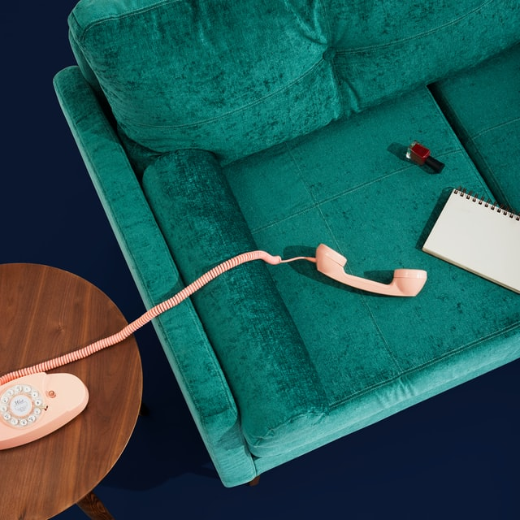
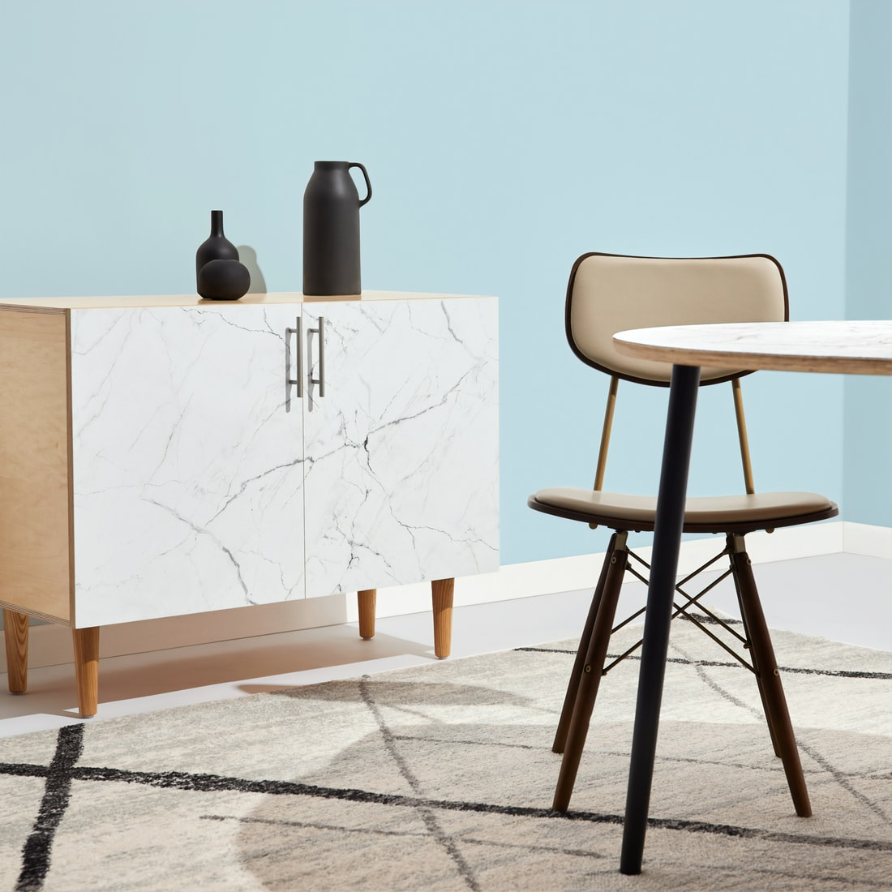
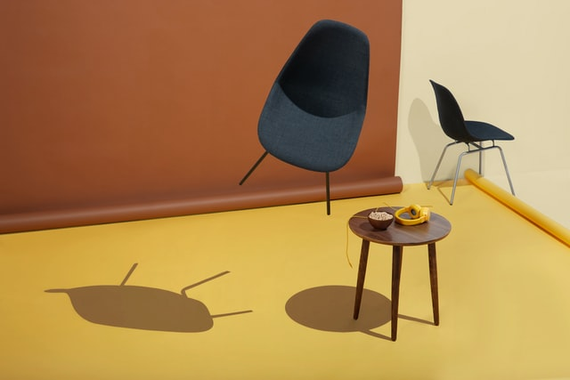
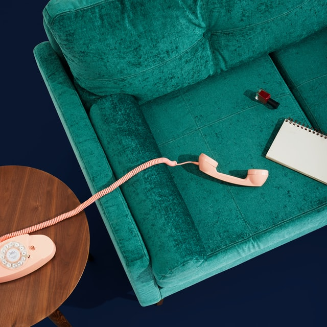
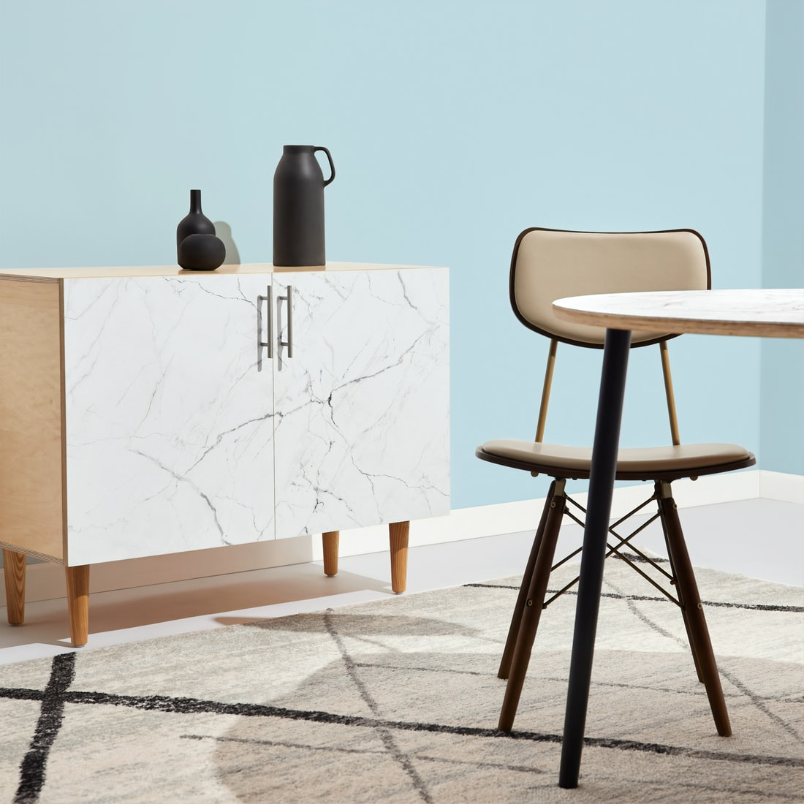
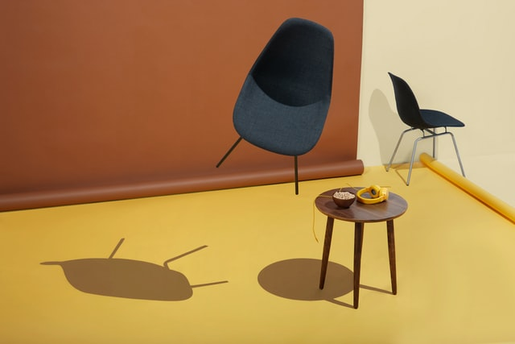

Somos The Makers Home
NUESTRO TRABAJO HABLA POR NOSOTROS
En The Makers (Home) adherimos a la idea de hogar como espacio para la expresión de uno mismo, de reconocimiento personal donde el confort, la simplicidad, el placer y la funcionalidad
son una consecuencia inherente al logro de materializar nuestras propias ideas.
No hay fórmulas infalibles con normas de estilo que garanticen un resultado perfecto, en el lugar donde nos encontramos y somos, no aplican los criterios arbitrarios.
Desde esta perspectiva, todos
somos fabricantes de hogares.
 




